2024美亚杯---复现and学习
容器密码
eS2%u@q#hake2#Z@6LWpQ8^T(R7cg95m\Bv+y;$=/dqxYnEusFf)tb>:HKHwy+e%cR\r=9j:GsK)AV52/3hXfdv8#u7a6JQ^pz><YPNkq*!&
题目
- [单选题] Emma已经几天没有收到她姐姐Clara的消息了，报警失踪，她焦虑地将手机提交给警察，希望能找到线索。警察将手机交给你进行电子数据取证。你成功提取了Emma手机的镜像。请根据取证结果回答以下问题。根据Emma_Mobile.zip，Emma和Clara的微信聊天记录，Emma最后到警署报案并拍摄写有报案编号的卡片，拍摄时的经纬值是多少？(2分)
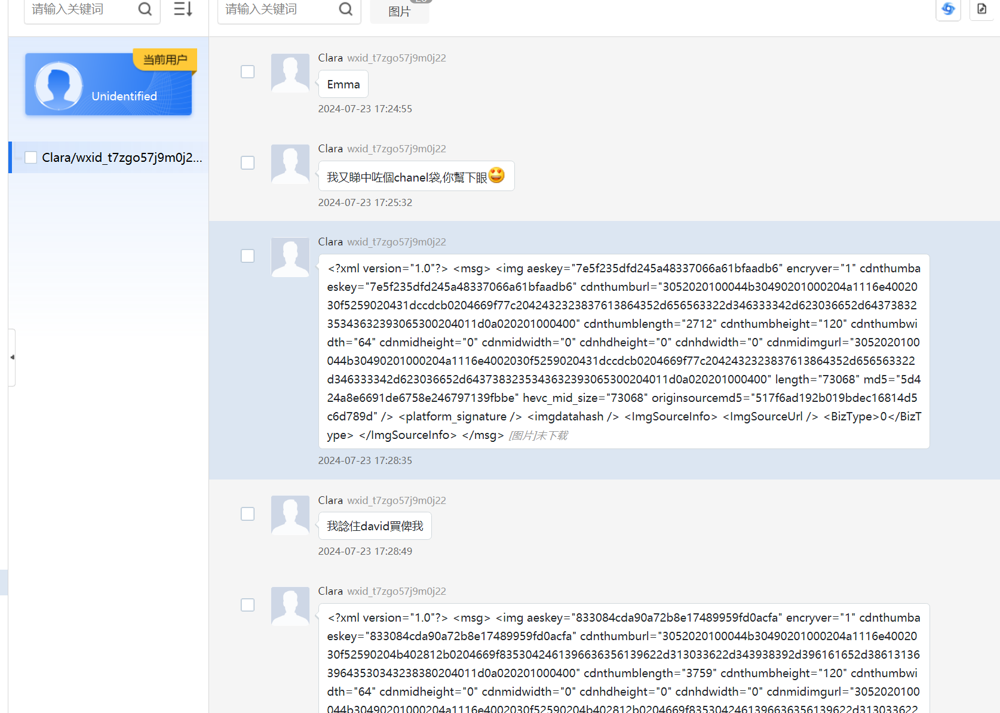
不知道为什么Emma里面的照片不行
那就从clara来发现
找到照片放到exiftools看可不可以
发现不行 使用数据库查找方式
发现一一对应
直接跳转到Photos.sqlite 最后一张就是要的
2. [单选题] 根据Emma_Mobile.zip，2024年8月30日下午两点后Emma共致电Clara多少次？(1分)
用眼睛看哦
3. [单选题] 根据Emma和Clara的微信聊天记录，Clara失踪前曾告诉Emma会到哪里？(1分)
聊天记录 自己看哦
4. [填空题] 参考Emma_Mobile.zip，Emma的iPhone XR内微信应用程序的版本是多少？(2分)
取证大师一把梭
5. [多选题] 参考Emma_Mobile.zip，Emma手机中下列哪个选项是正确的？(2分)
A. iOS版本为17.6.1
B. IMEI为356414106484705
C. Apple ID为Emma1761@gmail.com
D. 手机曾经安装Metamask应用程式
- IOS版本为
17.5.1- IMEI:
356414106484705- emmaemma.851231@gmail.com
- 包名：io.metamask.MetaMask 说明有 答案为
B,D
- [填空题] 参考Emma_Mobile.zip,Emma手机中Apple ID的注册电子邮箱是多少？(2分)
取证大师一把梭- [填空题] 参考Emma_Mobile.zip，在2024年，Emma手机上曾记录的电话卡集成电路卡标识符(ICCID)是多少？(答案格式:只需使用阿拉伯数字回答)(2分)
取证大师一把梭8985200000826445829- [填空题] 参考Emma_Mobile.zip，Emma手机的蓝牙设备名称”ELK-BLEDOM”的通用唯一标识符(UUID)是什么？(1分)
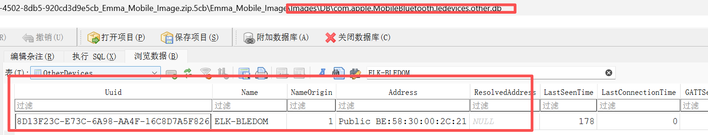
根据英文翻译 来按图索骥- [单选题] 你发现了一些线索，Emma看起来也很可疑，她似乎背负了大量债务。参考Emma_Mobile.zip，Emma手机内Safari浏览记录中网页”https://racing.hkjc.com/"的网站标题是什么？(1分)
哈哈哈这个翻译过来就是赛马 很符合港片里的刻板印象History_item里面的id 可以映射到History_visit里面的History_item直接找History_item为2的就可以了


| 题目问 | 去哪个库 |
|---|---|
| WhatsApp 聊天 | ChatStorage.sqlite |
| 相册/照片 | Photos.sqlite |
| Safari 浏览历史 | History.db ← 同一个套路 |
| 10. [单选题] 参考Emma_Mobile.zip，Emma向Clara透露什么原因令Emma欠下巨债？(1分) | |
| A. 投资孖展 | |
| B. 虚拟货币失利 | |
| C. 网上赌博 | |
| D. 以上皆是 |
包括前面提到的赛马
- [单选题] 参考Emma_Mobile.zip，收债人要求Emma还款数量？(1分)
A. 港币$786,990
B. 港币$878,990
C. 港币$786,980
D. 港币$745,330
可以搜索港币，但是这里有一个陷阱
你得要用繁体字，逗我呢？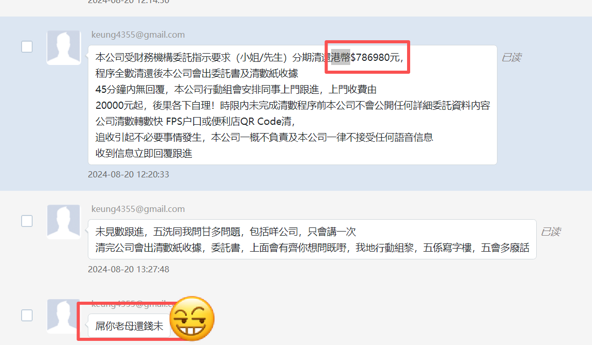
- [单选题] 参考Emma_Mobile.zip，Emma发送了多少张.PNG图片给Clara，证明自己正被人追债？(2分)
取证大师一把梭- [单选题] 参考Emma_Mobile.zip，Emma用来浏览虚拟货币的网址？(2分)
- 因为浏览器所以依旧
History.db- 在
history_tags里面发现加密貨幣- 顺藤摸瓜在
history_items_to_tags里面可以根据刚才的ID直接锁定history_item的https://intellax.io/about-us/
[单选题] 参考Emma_Mobile.zip的浏览器记录，有多少网址与bet365有关? (2分)
浏览器记录在History.db、SafariTabs.db、Bookmarks.db这三个数据库中在History.db中搜索bet365无相关记录
因为我只能找到3个所以就按答案的3填了[单选题] 你还发现了一些与不当使用他人加密钱包相关的痕迹。参考Emma_Mobile.zip，Emma用了哪些恢复短语(Recovery Phrase)进入David的虚拟货币账户？(2分)
A. stock,avocado,grab,clay
B. light,sadness,segment,ancient
C. toe,talk,elder,oil
D. 以上皆是
干 我的软件有问题找不到…..[单选题] 参考Emma_Mobile.zip，Emma从David处窃取的虚拟货币的名称是什么？(2分)
A. IDFC
B. ICAC
C. INIC
D. IFCC
由聊天记录可以知道是 A[单选题] 参考Emma_Mobile.zip，Clara偷拍的照片中，David的虚拟货币余额是多少？(2分)
A. 3266378.99
B. 1044749.22
C. 5022915.66
D. 7822468.44
由聊天记录的图片可知 5022915.44选C[单选题] 参考Emma_Mobile.zip，Emma在偷窃David的虚拟货币前，Emma曾向Clara透露有什么事发生在Emma身上？(1分)
A. 中彩票
B. 欠债
C. 升职
D. 失业
易得 欠债[多选题] (你查看了Emma手机中的一些照片数字信息，以获取更多与失踪案件的信息)Emma的iPhone XR中”IMG_0008.HEIC”的图像与相片名字为的”5005.JPG” 看似为同一张相片，在数码法理鉴证分析下，以下哪样描述是正确？(3分)
A. 储存在不同的.db檔案里
B. 有不同哈希值
C. IMG_0008.HEIC为原图，”5005.JPG”为并非原图
D. IMG_0008.HEIC和名字”5005.JPG”是同一张相片
HEIC为iOS和macOS的专有格式，一般苹果设备拍摄的照片原图是HEIC格式的，JPG格式可能为缩略图，它们的哈希值不同(参考https://mp.weixin.qq.com/s/Y-DQYmfzDQCqd1Qrm8TRBg)
选B.C[单选题] 参考Emma_Mobile.zip，Emma的iPhone XR中”IMG_0009.HEIC” 的图像显示拍摄参数怎样？(2分)
A. iPhone XR back camera 4.25mm f/1.8
B. iPhone XR back camera 4.25mm f/2.8
C. iPhone XR back camera 4.25mm f/2
D. iPhone XR back camera 4.25mm f/1.6定位 Photos.sqlite（美亚已解压的路径）
查 ZASSET 建表语句→ 发现里面没有焦距/光圈字段
搜关联表 → 命中 ZEXTENDEDATTRIBUTES
→ 里面有 ZLENSMODEL / ZFOCALLENGTH / ZAPERTURE / ZISO / ZSHUTTERSPEED[多选题] 参考Emma_Mobile.zip，Emma的iPhone XR中相片文件IMG_0009.HEIC提供了什么电子证据信息？(3分)
A. 此相片是由隔空投送 (Airdrop)得来
B. 此相片由iPhone XR拍摄
C. 此相片的拍摄时间为2024-08-05 13:38:15(UTC+8)
D. 此相片的拍摄时间为2024-08-06 08:30:52(UTC+8)
- A选项 由下列表可知
- B选项 由上题可知
- C选项 由上题可知
- D选项 由上题可知


| 字段 | 在哪张表 | 是什么 |
|---|---|---|
| ZKINDSUBTYPE | ZASSET（主表） | 数字：2=本机拍 / 10=截图 / 0=其他 |
| ZIMPORTEDBYDISPLAYNAME（值 SpringBoard） | ZADDITIONALASSETATTRIBUTES（附加属性表） | 文本：导入来源 |
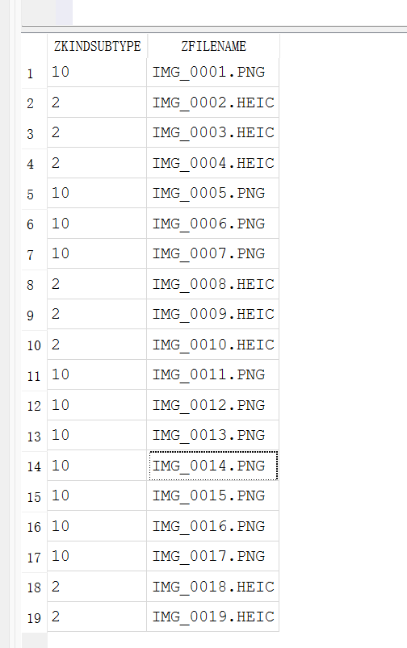 SELECT ZKINDSUBTYPE, ZFILENAME FROM ZASSET; |
||
| 22. [多选题] 参考Emma_Mobile.zip，Emma的iPhone XR内以下哪张照片是实况照片(Live Photos)？(2分) | ||
| A. IMG_0002.HEIC | ||
| B. IMG_0005.HEIC | ||
| C. IMG_0004.HEIC | ||
| D. IMG_0006.HEIC |
其实 live photo 本质上存储就是 HEIC 格式，文件中也就 2 和 4 是采用 HEIC 进行存储，那么就应该是 IMG_0002.HEIC 和 IMG_0004.HEIC
判定实况照片的字段：ZASSET.ZPLAYBACKSTYLE 为3就是实况
ZVIDEOCPDURATIONVALUE（配对视频时长，单位是纳秒）
手机里有多少张照片是用手机后置摄像镜头拍摄的?
A. 5
B. 6
C. 7
D. 8
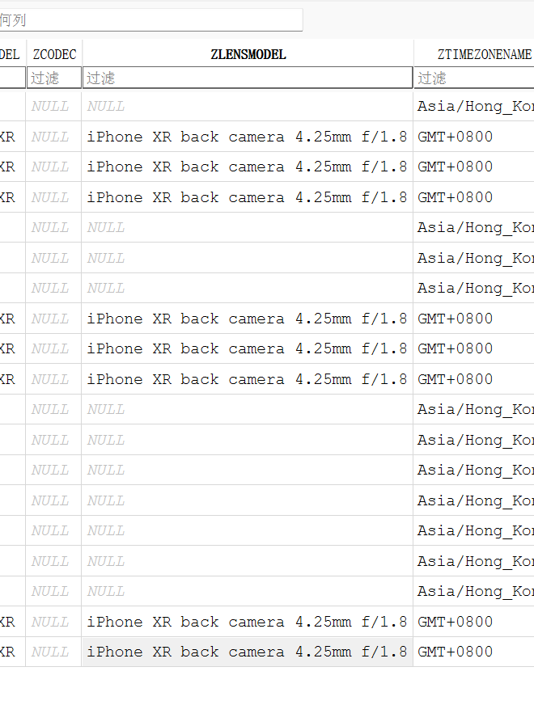
从photos.splite中的extentionalattributes 中的ZLENSMODEL(镜头属性)得出答案
参考通讯记录, MesLocalID 为 224 的是什么类的文件?
> 在message_2.spilte里面查看为img
15题重做
> 通过AI老师指导：
>
> * 
> * 先发现这张照片在取证大师找不到
> * 然后知道信息的ID
> * 在A:\Emma_Mobile_Image\Emma_Mobile_Image\Images\Active\var\mobile\Applications\group.com.tencent.xin\Document\02a951e5aa009ee836c3c1e32b136b21\Img\f6b680e85ab3ca24f9da291a870b72bf这个路径下发现照片ID
> * 但是微信的后缀pic是微信自己的命名习惯，可以直接改成JPG😂哈哈哈
> * 原因是这个：提取时验证过文件头是 `ffd8ff`（JPEG 的“签名”）
> 还有一种办法：直接塞给cyberchef的Magic
Clara 的手机
Clara 手机的 Android 操作系统版本是?
取证大师一把梭 8.0.0
Clara 手机的版本号(Build Number)是什么?

在build.prop文件中查找
Clara 手机的 IMEI 号码是多少?
351537092934716
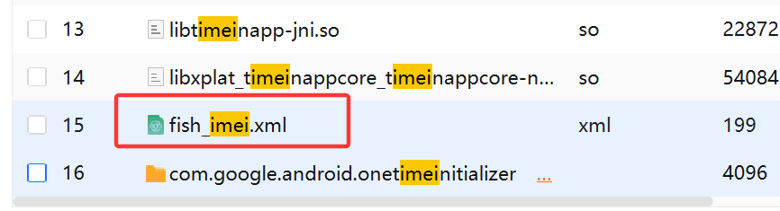
这个是在搜索中无意查到的,并没有依据哎
Emma 的微信账号是?
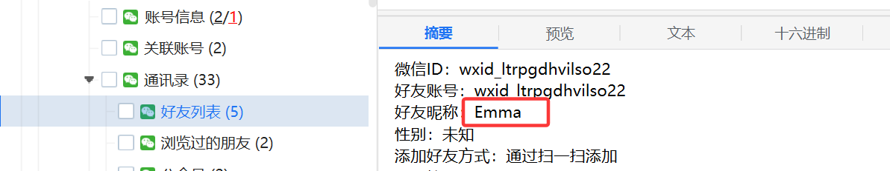
取证大师一把梭
Clara 的第一封电子邮件记录的日期?
取证大师一把梭
在通讯录中”David”的联系人信息还包括什么?
- A. 出生日期
- B. LinkedIn
- C. 电子邮件
- D. 地址
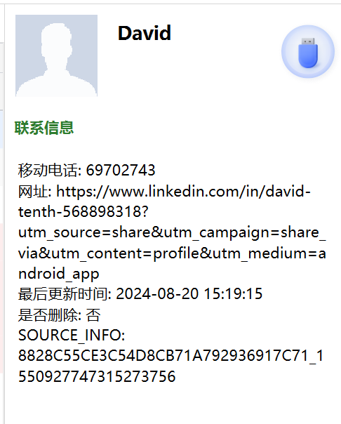
所以包括B选项linkdin
David 和 Clara 之间通话次数?
这题找不到，用AI跑的
总结一下AI的思路：
“通话次数” = 两部手机各自的通话记录库里，对方号码的记录条数。所以真正要回答的是三个小问题：
- Clara 手机里，”David” 对应哪个号码、有几条？
- David 手机里，”Clara” 对应哪个号码、有几条？
- 两条数能不能对上（互证）。
- Clara：127GB 裸镜像 → Android → 通话记录固定在
com.android.providers.contacts/databases/calllog.db（Android 通信录供应商的固定位置，背下来）。 - David：解出来是三星 SmartSwitch 备份结构（
Active/data_backup/ABR/）→ 通话不在 SQLite，在ABR/CALLLOG/call_log.exml（XML）。换备份格式，存储格式也换——这是这题最容易卡住的地方。
然后直接在calls表里面搜索就可以了
[单选题] 参考Clara_Smartphone.bin，Clara在Chrome浏览器搜索中哪天使用了关键词”popmart 炒价”? (2分)
2024-07-31 09:13:37
[单选题] 参考Clara_Smartphone.bin，2024年7月30日共收到多少封电子邮件？(2分)
取证大师一把梭
[填空题] 参考Clara_Smartphone.bin，Clara的Gmail账号是? (2分)
[单选题] 参考Clara_Smartphone.bin，Clara的手机安装了哪个版本的WhatsApp？(2分)
241676004
[填空题] 参考Clara_Smartphone.bin，Clara的WhatsApp账号？(答案格式:只需填写11位阿拉伯数字) (2分)
85263791704
[单选题] 参考Clara_Smartphone.bin，Clara的手机在什么时候安装了小红书APP？(2分)
2024-07-16 16:50:23
[单选题] 参考Clara_Smartphone.bin，2024年8月21日David的虚拟貨幣钱包里有多少IDFC？(3分)
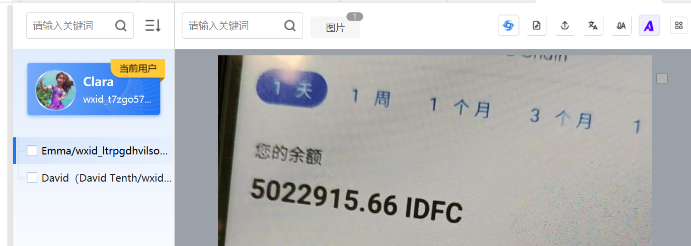
还有这么多
[填空题] 参考Clara_Smartphone.bin，Clara注册的微信账号是多少？(2分)
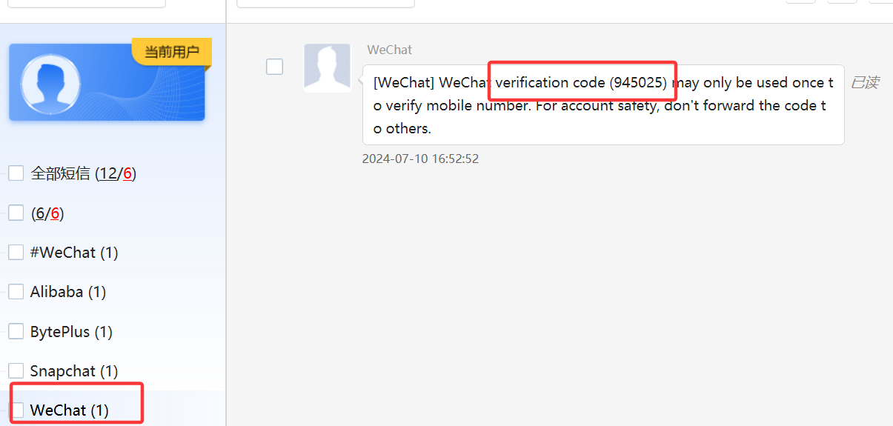
可以搜索在短信里面WeChat，即可
945025
[填空题] 参考Clara_Smartphone.bin，David为庆祝结婚周年纪念预订了哪家酒店？提示:请使用大写英文字母作答，例如:HONG KONG HOTEL) (3分)
Conrad Hong Kong
[填空题] 参考Clara_Smartphone.bin，哪个数据库文件存储了微信消息？(答案格式:只需使用全部大写回答, 例如:ABC.DB) (3分)
这题使用了AI：
com.tencent.mm= 微信的包名（App 沙盒入口）MicroMsg/<32位hex>/——这个 hex 目录名 = **md5(微信 UIN)**，一个账号一个目录（Clara 的就是fb5f7edb...）EnMicroMsg.db= 微信核心库（消息、联系人、会话全在里面），SQLCipher 加密，密钥 =md5(IMEI+UIN)前 7 位——取证大师自动解了，你手动打开才会看到”not a database”
[填空题] 参考Clara_Smartphone.bin，哪个数据库文件(.db)存储了WhatsApp訊息？(3分)
搜索com.whatsapp
进入文件夹后找到msgstore.db
就是WhatsApp的消息数据库
[单选题] 参考Clara_Smartphone.bin，Clara在2024年8月29日拍了多少张照片？(2分)
com.android.providers.media= 媒体提供器（MediaProvider），安卓所有照片/视频/音频的“户籍登记处”。里面的external.db
在datetaken列使用了时间戳转换
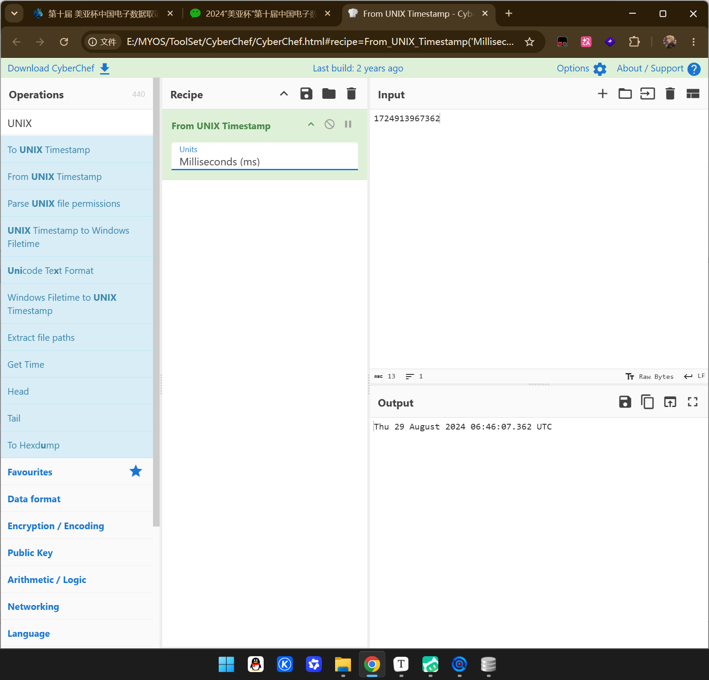
From UNIx Timestamp 然后 Milliseconds (ms)
[单选题] 参考Clara_Smartphone.bin，Emma在2024年8月6日通过微信发送了多少张照片给Clara? (2分)
两个聊天记录都没有找到，所以是0张
[填空题] 参考Clara_Smartphone.bin，照片20240829_144717.jpg的拍摄相机型号是什么？(2分)
LG-H930
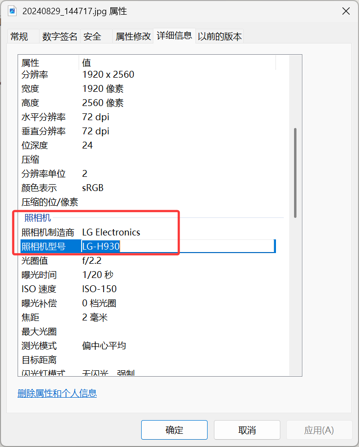
第二种办法：用exiftool
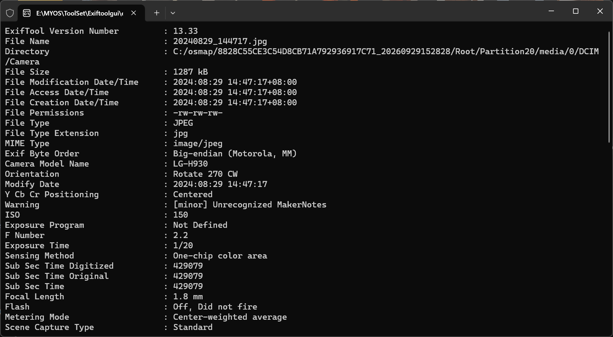
MODEL那里就是答案
[单选题] 参考Clara_Smartphone.bin，20240821_121435.jpg的储存路径是什么？(2分)
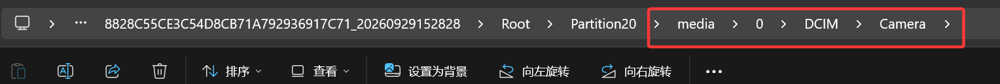
除去分区就是路径了
[填空题] 参考Clara_Smartphone.bin，2024年8月20日有多少张截图？(2分)
截图是png
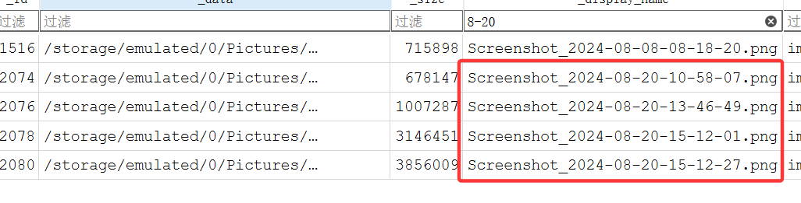
[单选题] 参考Clara_Smartphone.bin，2024年8月22日被删除微信消息的类型是？(3分)
在取证大师的聊天记录里面找不到
转战到聊天DB
你知道這是甚麼來嗎？从这里开始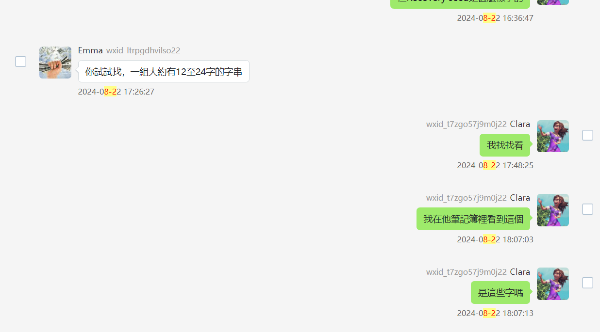
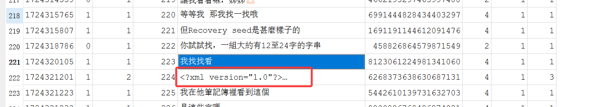
相吻合 确定为照片
[填空题] 你在查看Clara的手机镜像后，确定Clara是David的妻子，调查员通过查询酒店预订记录确认了这一点。他们现在定位David的住所，以进行进一步调查。你首先分析David的手机。参考David_Smartphone_1.zip，根据Contents.db，David手机接收了通讯软件”Telegram”的验证短信，该验证码是多少？(3分)
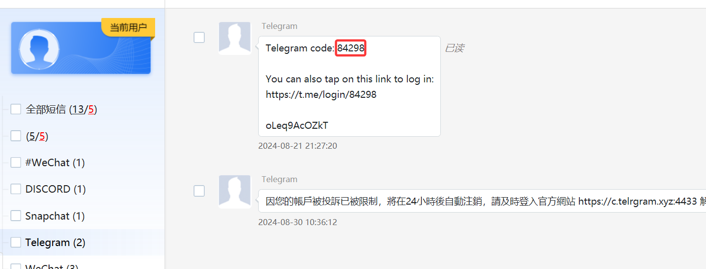
84298为验证码
[填空题] 参考David_Smartphone_1.zip，David把手机设置为个人热点，请找出个人热点的密码。(3分)
wdfj5674
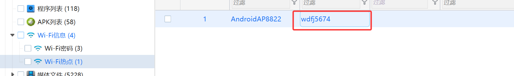
[判断题] 参考David_Smartphone_1.zip, David 手机曾连接名为”MTR Free Wi-Fi” 的Wi-Fi ｡ (2分)
✅
[填空题] 参考David_Smartphone_1.zip，根据com.tencent.mm_preferences.xml，David的手机最后登录微信的微信ID是？(3分)
因为科技的进步 所以有工具wxid_rni3m2o8ngxe22
如果按题目来的话，也很简单：
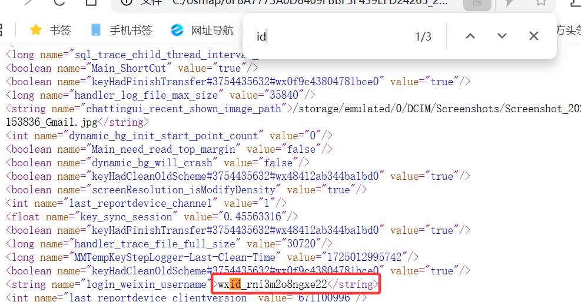
[填空题] 参考David_Smartphone_1.zip，请指出哪一张图片是于2024年8月28日利用屏幕截取的。(答案格式:ABC_123.jpg) (3分)
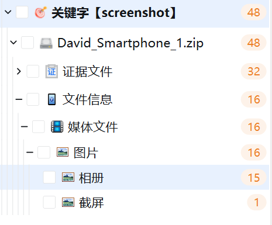
然后再关键词8-28得到
Screenshot_20240828-153836_Gmail.jpg
[填空题] 参考 David_Smartphone_1.zip，根据Contents.db，David手机的型号(Model)？(答案格式:大写英文字母和符号’-‘ 混合组成) (2分)
SM-G9500
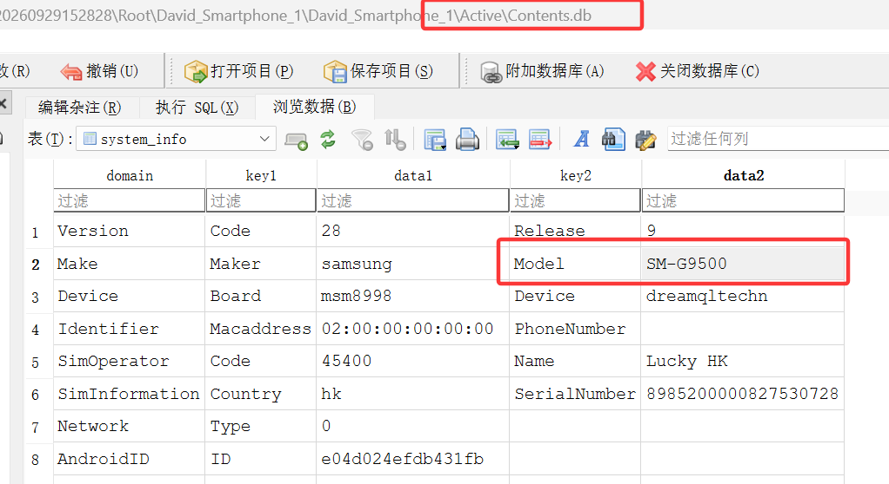
[填空题] 参考 David_Smartphone_1.zip的Contents.db，David所使用的手机SIM 卡的序号？(答案格式:只需要用阿拉伯数目字回答) (1分)
8985200000827530728
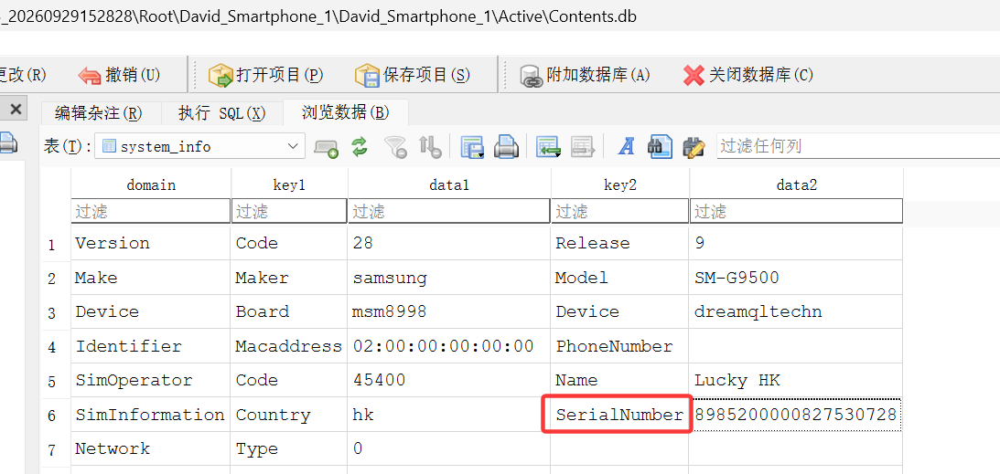
这是ICCID 编码 也算是SIM序号
[填空题] 参考 David_Smartphone_1.zip，David手机安装了应用程序”MetaMask”。根据中，”MetaMask”钱包内有多少个账号？(3分)
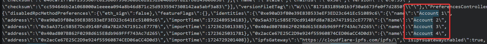
大概率为4个账号
这个是用VSCODE 打开的
[单选题] 参考 David_Smartphone_1.zip，根据persist-root中，何时从应用程序”MetaMask”发送虚拟货币至以下地址: 0X10A4F01B80203591CCEE76081A4489AE1CD1281C (3分)
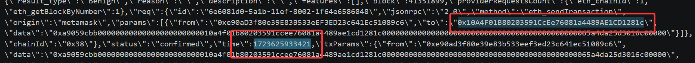
使用cyberchef得出
Wed 14 August 2024 08:58:53.421 UTC[单选题] 参考 David_Smartphone_1.zip，David曾利用手机应用程序”MetaMask”三次发送虚拟货币失败。根据persist-root，发送虚拟货币失败的原因是什麼？(3分)
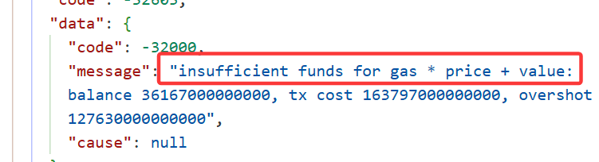
余额不够
David 的 电脑 部分（volality3）
- [单选题] 你根据易失性(Volatility Level)优先次序，进行内存取证分析David的笔记本电脑。参考RAM_Capture_David_Laptop.RAW，以下哪一个不是程序”firefox.exe”的PID？(2分)
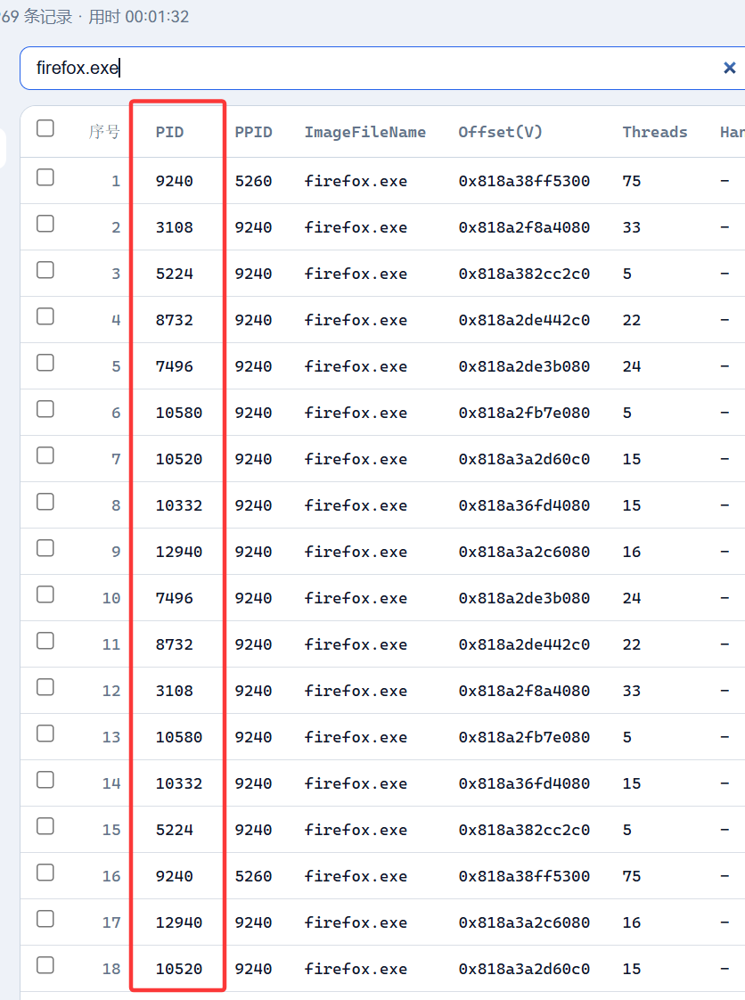
易得5260
[填空题] 参考RAM_Capture_David_Laptop.RAW，汇出PID：724的程序，其哈希值(SHA-256)是？(2分)
1
2vol.exe -f "E:\Case\24年美亚杯\dev\RAM\RAM_Capture_David_Laptop.raw" -o "E:\dump_out" windows.pslist --pid 724 --dump1
2certutil -hashfile "E:\dump_out\724.lsass.exe.0x7ff6eed10000.dmp" SHA256GET 89cf04b53119d36654bc5e7eeb5d0829a84238ee03faa9a03948f5bf4be44583
[单选题] 参考RAM_Capture_David_Laptop.RAW，哪一个是执行PID：724程序的SID？
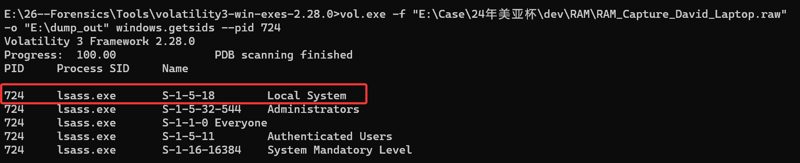
这里有好几个
我也不太懂了，知识盲区
[填空题] 参考RAM_Capture_David_Laptop.RAW，账户David Tenth的NT LAN Manager的哈希值(NTLM Hash)？(答案格式:只需使用全部小写及阿拉伯数字回答) (1分)
继续使用volatality3
1
2
3cd /d E:\26--Forensics\Tools\volatility3-win-exes-2.28.0
vol.exe -f "E:\Case\24年美亚杯\dev\RAM\RAM_Capture_David_Laptop.raw" windows.hashdumpe14a21fefc5dd81275bb87228586cffc为答案
David 的 U 盘部分
[单选题] 在取证中，你发现D盘被BitLocker加密。U盘上可能有一些线索，你对U盘进行了取证。参考David_USB_8GB.e01，David 的U盘文件系统的格式？(2分)
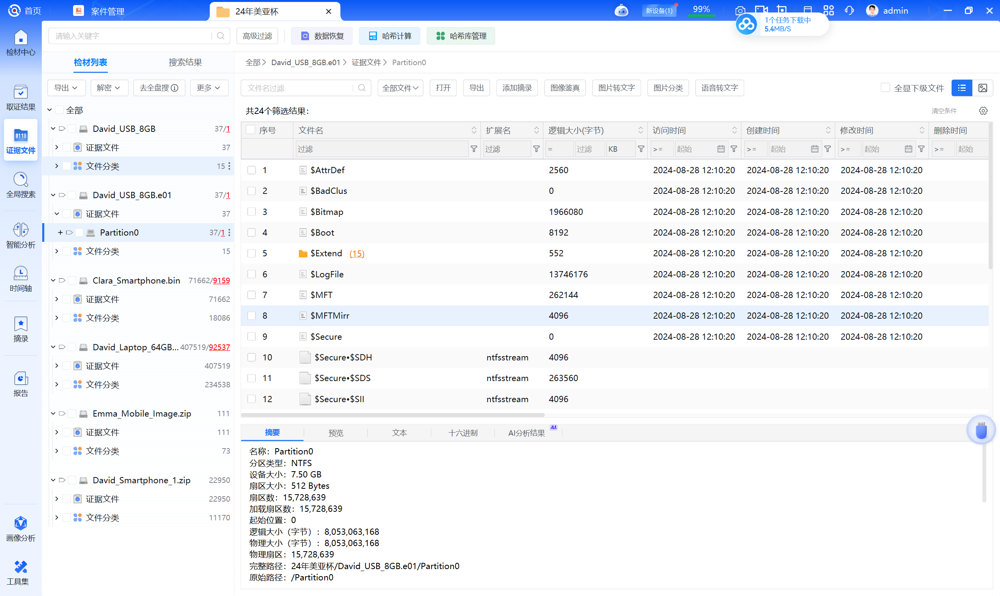
证据文件里面-> 分区节点的属性
NTFS为答案
[单选题] 参考David_USB_8GB.e01，David的U盘文件系统中，每簇(Cluster)定义了多少字节(Byte)？(2分)
在上图可以知道答案
512byte
[单选题] 参考David_USB_8GB.e01，David的U盘中有多少个已删除的文件？(2分)
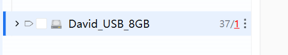
一个文件
[单选题] 承上题,参考David_USB_8GB.e01,已删除的文件的运行列表(Run List)的运行偏移量(Run Offset)数量是多少? (2分)
> 先知道已删除文件为**bitlocker_key.jpg**
>
> 然后再使用MFT Brower
>
> 
>
> datarun offset为答案 64
- [单选题] 承上题,参考David_USB_8GB.e01,已删除文件的第一个运行的十六进制值(低端字节序 Little-Endian)是多少?
> 
>
> 为啥这样做呢？神才知道
[填空题] 承上题,参考David_USB_8GB.e01,已删除的文件的实际大小(单位:字节 Byte)是多少? (2分)
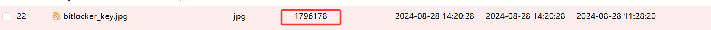
取证大师一把梭
[填空题] 承上题,参考David_USB_8GB.e01,已删除文件的第一个运行偏移量(Run Offset)是多少? (答案格式:只需使用阿拉伯数字回答) (2分)
> 
>
> 我没招了。。。。
[单选题] 承上题,参考David_USB_8GB.e01,已删除的文件的第一个运行的簇运行长度(Run Length)是多少? (2分)
从上图可以知道答案为3509
括号里面的H D的意思是 十进制和十六进制
[单选题] 承上题,参考David_USB_8GB.e01,已删除文件的图像文件像素值(Pixel)是多少? (2分)
> A. 1000 x 2000
>
> B. 2000 x 3000
>
> C. 3000 x 4000
>
> D. 4000 x 5000
> 
>
> 选择C
- [单选题] 承上题,参考David_USB_8GB.e01,已删除图像文件是用哪个品牌和型号的手机拍摄? (2分)
> 
>
> 答案出来了
在U盘中,你还发现了一个exe文件,但它被锁定,可能需要进行反编译以便进一步检查。参考David_USB_8GB.e01,使用x64dbg的字符串搜索(String Search)功能,在Bitlocker.exe中查找哪个字符串最有可能与显示的登录状态有关? (1分)
- A. Welcome
- B. Invalid input
- C. Login Successful!
- D. Access Denied
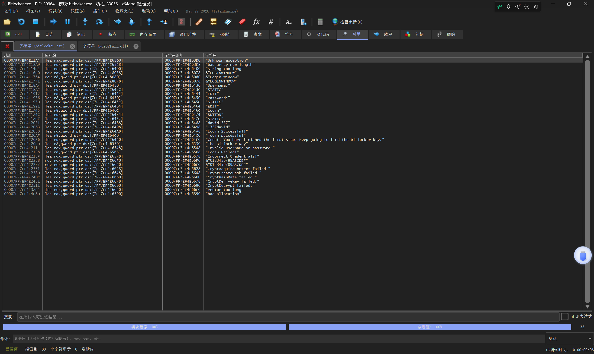
用肉眼看的选C
步骤如下：
新工具下载https://github.com/x64dbg/x64dbg/releases打开x96dbg。exe，打开64dbg模式
- 先在资源管理器里双击运行
Bitlocker.exe（会出现登录窗口，正常） - x64dbg → 文件(F) → **附加(Attach)**（或按
Alt+A）→ 在进程列表里选Bitlocker.exe→ 附加 - 附加成功后进程暂停 → 现在做字符串搜索：CPU 窗口右键 → 查找 → 当前模块中的字符串 → 找
Login Successful!那一串
承上題,当找到控制登录成功的逻辑代码时,如何修改汇编代码(Assembly Code)来绕过检查,达到任意输入，都成功登录的效果? (2分)
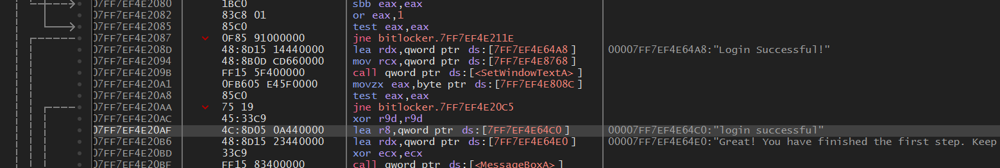
汇编忘光光哈哈哈😂
参考David_USB_8GB.e01,Bitlocker.exe的正确用户登录名称是? (1分)
参考David_USB_8GB.e01,Bitlocker.exe的正确登录密码是? (2分)
参考David_USB_8GB.e01,当Bitlocker.exe程序尝试显示登录结果（成功或失败）时,使用了哪一种途径来决定显示的消息? (2分)
参考David_USB_8GB.e01,决定能否解密Bitlocker Key 的字节的内存偏移量(Memory Offset)（相对于基址”bitlocker.exe”）是什么? (3分)
参考David_USB_8GB.e01,决定能否解密Bitlocker Key 的内存偏移量(Memory Offset)后,应该如何利用它来进行解密? (2分)
[单选题] 参考David_USB_8GB.e01,解密后的 Bitlocker Key 是? (3分)
> A. 299255-418649-198198-616891-099682-482306-642609-483527
>
> B. 745823-918273-564738-290183-475920-182736-594827-162839
>
> C. 539823-847291-094857-194756-382910-472918-482937-120984
>
> D. 829384-192837-475910-298374-019283-847362-564738-293847
> U盘里的图片就是答案
David 的笔记本电脑
分区格式是?
该 e01 成功提取的日期和时间是?
最后登录的用户是谁?
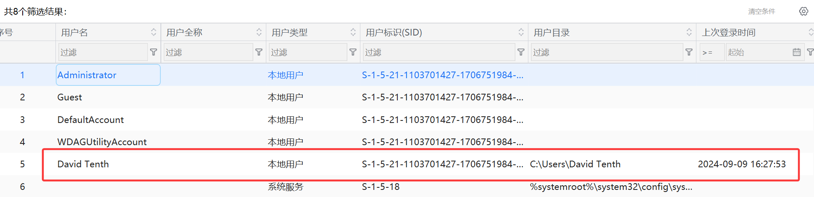
只有这一栏有登录记录
用户配置的时区是?
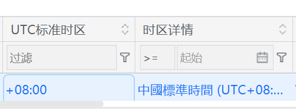
- B. China Standard Time
David 的笔记本电脑曾经连接了多少个设备?
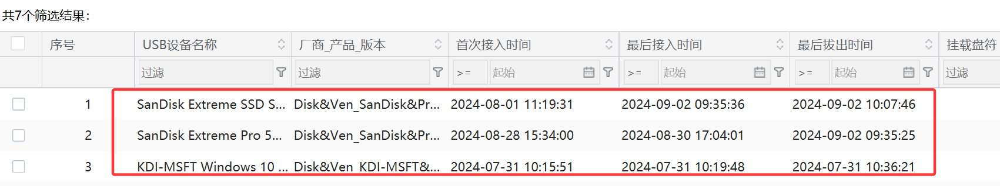
A. 1
B. 2
C. 3
D. 4
所以只能选C
David 的笔记本电脑上的 Firefox 浏览器安装了哪些扩展工具?
分析 IDFC 的交易记录, Emma 盜取了 David 虚拟货币钱包内哪个地址的 IDFC?
> 这里学到了新知识（doge其实之前觉得太麻烦，所以没去学）
>
> 虚拟货币钱包
> 通过助记词得到address
>
> 0x10a4f01b80203591ccee76081a4489ae1cd1281c
- Emma 总共盗取了 David 多少 IDFC?
> 衔接上题
>
> 发现了这个地址只有一次转出去了
>
> 所以这个就是答案
- [多选题] 根据Emma及Clara的微信对话，下列哪些地址是由相同的恢复短语(Recovery Seed)所生成？(3分)
> 
>
> 在95题中发现的
- 根据 IDFC 的交易记录作分析, 总共有多少次 IDFC 交易流入地址 0x10a4f01b80203591ccee76081a4489ae1cd1281c?
> export-token-0x56E7A6dd8aA1c78ba77944C94c43054978E89b7b 从这里面查询
>
> 知道有两次to
在 David 计算机的 D 盘内有一张图片, 根据图片上的信息, 找出 David 另一个虚拟货币钱包的恢复短语, 下列哪一个单词是在此恢复短语内?
- A. fall
- B. bread
- C. brain
- D. dove
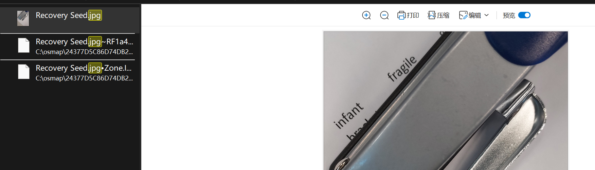
这题要根据已有的助记词
来找其他的词
使用winhex来查找内存镜像
- Search → Simultaneous Search（同步搜索，这是 WinHex 的招牌功能）
- 关键字填
fragile，勾选两种编码：- Text: ASCII → 抓我们 grep 到的那些明文命中
- Text: Unicode (UTF-16) → 抓偏移 5.67GB 那份 UTF-16 编码的助记词（grep 恰好在这里不如 WinHex 方便）
- 搜索范围选 Entire file，点 OK → 所有命中列成一个清单
在 IDFC 的交易记录中, 下列哪些地址由上述恢复短语所生成?
> 
>
> 大功告成！！！！！！！！！！！！！！！！！！！！！！！！！！！！！！！！！！！！！！！！